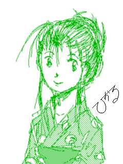
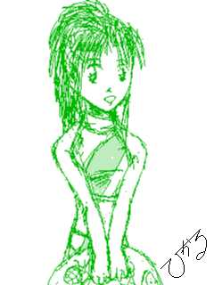
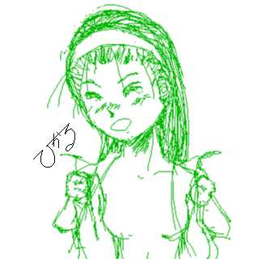

カーニバル サマー！サマー！
後編
文画両刀：ことぶきひかる
「真紀ちゃーん。雄二君が、来てるわよ。」
祖母の声に、十数秒後，２階から，ドタドタと慌てて駆け出す音が聞こえる。
中２になっても、相変わらず，アクティブというか，落ち着きのないところは
変わっていないようだ。
「ごめんなさいねえ。雄二さんと、お祭りに行くって決まったら、急に，浴衣
の着付けや髪のまとめ方，教えてって，いいだして。
たった２日でしょ。覚えられるはずもないのに、１人でやるってきかなくって
。」
苦笑しながら、祖母の目が細まる。
孫娘が、次第に、女らしくなっていくことが嬉しくて仕方ないという様子だ。
その言葉と表情に、雄二もまた苦笑を隠せない。
真紀から、祭りの夜店に誘われたのは、２日前の練習の帰りのこと。
「ねー。夜店，一緒に行こうよ。」
「ん、夜店かあ・・・」
牧野言葉に，雄二は、如何にも乗り気でないような返事を返す。
お祭りが待ち遠しかったのは，せいぜい中学までのこと。
流石に、高校３年ともなると，あまり興味も湧かなくなる。
「そんなこと、いわないで、一緒に行こうよ。」
上目遣いに，強請るような真紀の眼差しに，雄二は、それ以上、意地悪する気
にもなれない。
「分かった分かった。いってやるよ。」
「ホントォ！！約束！約束だからね！」
今にも、飛び上がったまま，降りてこなくなってしまいそうな真紀の雰囲気に
，雄二は、やれやれというため息をつかずにはいられなかった。

そんなことを考えていると、駆けていた足音が不意に止み、静かに階段を下り てくる音に変わった。
２４００円かけて、遂に雄二は、黒デメキンをゲットした。
その巨体に、袋は，かなり狭いようだが、真紀は、そんなことさえ、ご満悦な
様だった。
右手には、わたあめ。左手に、大量の金魚と水風船ヨーヨーという格好で、真
紀は、雄二に寄り添うように歩く。
「あ、たこ焼き，買ってない。雄二お兄ちゃん、持ってて。」
不意にそう叫び，ワタアメを、雄二に押しつけると、真紀は、屋台に駆け寄っ
た。
「おじさーん、たこ焼き１つね。」
「あいよ。」
ソースの上に、青海苔と削り節のかかった９個入りのたこ焼きの皿を片手に、
真紀は戻ってきた。
「ね、半分コしよ。」
真紀は、たこ焼きの乗った皿を、雄二の目の前に突き出す。
幸いにも、爪楊枝は２本刺さっており、２人は、たこ焼きを口に運ぶ。
薄目の昆布ダシのたこ焼きの生地に，こってりとしたソースと削り節と青海苔
の組み合わせは、絶妙な味わいを生み出す。
９個しかないたこ焼きは，たちまち後１個になってしまった。
「あ」
「あえ」
手を出しかけた２人の動きが、直前で同時に止まる。
流石に、最後の１つとなると、ナーバスにならざるを得ない。
「雄二お兄ちゃん，食べていいよ。」
少し名残惜しそうに，真紀が，雄二に勧める。
「ん、そうか。じゃあ、半分こにしようや。」
そういうが速いか、雄二は、最後のたこ焼きを、一口囓った。
「ほれ。」
何という気もなし、半分になったたこ焼きを真紀に差し出した雄二だったが、
真紀の方は、そうもいかなかった。
雄二の歯形がはっきりと残るたこ焼きの片割れ・・・
（たこ焼きだけど、これも間接・・・キス・・・だよね・・・）
そんな想いも、つい、脳裏に浮かぶ。
数秒ほど迷った後、思い切って、一口で、たこ焼きを頬張る。
「おい、青海苔ついてるぜ。」
真紀の心中を知ってか知らずか、からかうように、雄二が、指先で、真紀の口
元から、青海苔を拭う。
雄二にとっては、何気ない動作だったが，不意打ちだったこともあり、自分の
唇を掠めていった指の感触に、真紀は、鼓動が高まり、身体が熱くなることを覚
えた。
「それじゃ、そろそろ帰ろうか。」
「え、もう？」
ワタアメを食べ終え，まだ遊び足りないと言わんばかりに、真紀は不満の言葉
を返す。
「もうって、いい加減，９時になるよ。真紀ちゃんは，中学生なんだからさ。
」
そう言われては、返す言葉もない。
もし、補導でもされることになったら、雄二にも迷惑をかけてしまう。
「うん・・・」
しょぼくれる真紀の肩を、雄二は優しく叩く。
と、雄二は、軽く叩いたつもりだったのが，不意に、真紀の上半身が、前のめ
りになる。
慣れない浴衣に下駄，更に両手に金魚の袋，おまけに、たこ焼きの間接キスに
逆上せてしまったというバリューセットによって、真紀の体勢は，かなり不安定
な状態に陥っていたのだ。
「あ」
いうが速いか、下半身も上半身の動きにつられて、安定を失い、真紀は、この
瞬間にも、転倒しそうになってしまう。
せめて、足下がスニーカーだったなら，下半身だけでも、抑え付けようがあっ
たのだが、下駄では踏ん張りが効かない。
不幸中の幸いと言うべきか、脚を束縛する浴衣の裾のお陰で、前のめりになる
速度は、あまり加速しなかった。
真紀が体勢を崩すと知るや，雄二は、サイドステップで、彼女の前方へと回り
込んでいた。
幸いにも、前方には人混みはまばらだ。
正面から、真紀は、雄二の胸に飛び込む形になった。
がっしりとした，しかし弾力のある暖かい壁のお陰で，どうにか体勢を立て直
した真紀は、その壁が、左右から自分を囲んでくれたことに気づいた。
「あ。雄二お兄ちゃん。」
視線を上に向けると、雄二が優しげな眼差しで，真紀のことを見下ろしていた
。
屋台からの煙や喧噪の中で、洗い立ての髪の香りが，鼻の奥に染み込もうとす
るように，雄二の心を刺激する。
シャンプーでもリンスでもない、「髪」特有の香り。
つい、彼女を抱き留めている両手にも力が入る。
金魚の袋が潰れて，水が手や服を濡らしていたが，そんなことを気にする余裕
は、雄二にはなくなっていた。
浴衣のせいか、それとも、髪をアップにまとめているせいか，いつもより、真
紀が、小さく感じられる。
自分に身体を預けるその様は、まるで、父親の膝の上で、うとうとし始める子
供を想わせていた。そこが、世界で最も安心できる場所であるが故に・・・
雄二の心の中で、真紀への愛おしい想いが、暖かい部屋に置かれたパン生地の
ように急激に膨れ上がる。
一方、真紀もまた、自分の身体が火照りだしていることに気づいた。
男の体臭と汗の染み込んだＴシャツの感触、逞しい胸、今この瞬間も自分をこ
とを受け止めていてくれる太い腕。
雄二の・・・男性の身体に自分の身体を預けることが，こんなにも、自分の身
体を、心を熱くさせるモノだとは想ってもみなかった。
その胸に耳をあてていると、力強く鼓動を刻む心臓の音が聞こえてくる。
（雄二お兄ちゃんの胸・・・）
だが、ここが、夜の公園か砂浜だったら、そのままでもよかったのだろうが、
ここは、夜店の屋台の列の中。
じっと抱き合い続ける２人の男女の姿に，夜店に来ていた他の人々が、怪訝そ
うな眼差しを向け始める。
自分達が、かなりスゴいことをやってしまったことに気づいて、雄二と真紀は
、慌てて、身体を離した。
「雄二お兄ちゃんに、助けて貰ったの２回目だね。ボク・・・あ、ゴメン。ま
た，ボクって言っちゃった・・・」
ここのところ、雄二と約束したように、「ボク」ではなく「あたし」と言うよ
うにしていたのだが，想わぬ事態に、つい、「ボク」と言ってしまった。
「まあ、いいざ。今夜はお祭りなんだし。」
雄二は、今度は、体勢を崩さないようにと，本当に軽く、真紀の背中に手をあ
てる。
「それじゃ、今度こそ帰るとしようぜ。」
この時刻になると、流石に、祭りに行く人はなく、家に帰ろうとする人ばかり
だ。
本通りからは、やや引っ込んだ位置にある真紀の家への路には、２人以外、人
影はない。
この時を待っていたかのように，雄二が口を開いた。
「その・・・真紀ちゃん。話があるんだ。」
いきなり、話を切り出してきた雄二に，真紀は、戸惑いを隠せない。
「な、なに？」
「その・・・オレ、今年、大学受験なの、知ってるよな・・・」
「・・・うん。」
雄二と真紀とでは４歳違いだから、雄二は、高３だ。
「今まで、怠けてたわけじゃないけど，いよいよ、本腰をいれなきゃならない
時期なんだ。
サークル代表にも、届け出たけど、しばらく、練習にも参加できなくなる。」
「え、練習にも？」
雄二に会える時間が短くなることに、真紀は驚きと不満を覚えた。
「ああ、流石に受験生がサークル活動もないだろ。」
「うん・・・」
「この際、はっきりとさせておこうと想う。オレ達、オレの受験が終わるまで
、会わないようにしよう。」
「・・・会わない？そんな，なんで？！」
サークルの練習時間は確かに問題だ。
しかし、何故、自分と雄二が会ってはいけないのか。
疑問に顔を曇らせる真紀を諭すように、雄二は言葉を続ける。
「願掛けとかそう言うのとは違うんだ。けど、このまま，ダラダラと会うこと
を考えていたら，もし、それが原因で、不合格になったら、悔やんでも悔やみき
れない・・・」
雄二の言葉も、ある意味もっともだった。
自分が最も大切なものを断つぐらいの意気込みやハングリーさがなければ、成
すべきことを成すことは出来ない。
「・・・そうだよね。雄二お兄ちゃん」
雄二のことを想えば、真紀も頷くしかない。
「お、おい，そんな悲しそうな顔するなよ。もう２度と会えないってわけじゃ
ないんだから。それに、会わないっていうのは、直接って意味だけで、電話なら
構わないんだ。」
「ホント？ホントに？」
「ああ、けど、１週間に１度だけだぞ。会わない分、長電話になったら，何の
意味もないからな。」
「う、うん・・・」
まだ、どこか、諦めきれないといった様子の真紀。
「けど、今日、これで、もう会わなくなるっていうのも寂しいからな。夏休み
のうちに、１度だけ、デーとしようか。」
デートと単語に、真紀の表情に明るさが戻る。
「デート？ホントに？！」
「ああ、真紀ちゃんが行きたいトコにつき合ってやるよ。」
「え、それじゃ・・・」
いきなり、真紀は考え込む素振りを見せた。
「・・・ね、どこにいくか、後からじゃダメ？」
強請るような視線を雄二に向ける真紀。
待ち望んでいた言葉なのだろうが，いざ言われてしまうと，どこにしたものか
，決めかねてしまったらしい。
「あはは、構わないよ。いきなり、言われても、決めようがないさ。」
「そ、それじゃ、今度、電話するね。」
とにかく、早く決めてしまわないと，この絶好の機会を失ってしまうとでも想
っているかのように，真紀は、焦ったように言葉を紡ぐ。
そんな真紀を、優しく見つめながら、雄二は、帰り道をゆっくりと歩いた。
夏休みも、後１週間となったその日。
待ち合わせ場所で，雄二は、真紀のことを待っていた。
真紀の希望は、初夏に国内公開となった、ＳＦＸ満載、活劇有りロマンス有り
の話題作の映画だ。
想えば、真紀とは、電話を除けば，サークルの練習とその行き帰りそして体育
館脇以外では，ロクに話したこともなかった。
告白してから１年も経とうと言うのに・・・
「ごめんさなーい！」
場違いなくらい元気な声と共に、１人の少女が駆け寄ってくる。
聞き覚えのありすぎる声に雄二は視線をそちらに切り替えた。
一応、約束の時間を１０分ほど過ぎている。
声の主は，やはり真紀だった。
薄いピンクの・・・桜色を想わせるショートスリーブのシャツに，デニムのス
カート・・・かと想ったら、スカートのようなデザインのショートパンツだった
。
やはり、まだスカートは苦手らしい。
今日もまた、髪をおろしており、服装と相まって、普段より、多少，大人びた
雰囲気があった。
一応，大学生になった雄二への気遣いだろうか。
「ごめんね。遅くなっちゃって・・・」
少し息を切らしながら、雄二に前で立ち止まった真紀は、とりあえず、いいわ
けを呟く。
「いいさ。１０分も待っていないよ。それより、早く、映画館に行かないと、
いい席、とられちまうぜ。」
いくら話題作とはいえ、公開から１月半、更に平日となれば、席を埋める人も
まばらだ。
２人はちゃっかりと、中段のほぼ中央に腰を降ろした。
上映開始までの時間を、パンフを見たりしながら，潰す。
ブザーが鳴り、照明が落ち、スクリーンを覆っていた幕があがっていく。
正月公開予定の映画の予告編の後，本編が始まった。
最初は、映画に没頭していた２人だったが，３０分ほどすると，テレビを見て
いるときのクセもあり，なんとなく気もそぞろになってくる。
「・・・あ・・・」
不意の、すぐそばから、声が聞こえた。
最初は、映画の中の声かと想っていたが、どうやら、そうではない。
明らかに，生の音声だ。
声のした方向に視線を向ける。
雄二から、５つほど離れた席で，２０代らしきカップルが、明らかに映画鑑賞
以外のことをしていた。
なにしろ、２人とも、スクリーンの方を見ていない。
２人の視線は、対外に向けられていた。
いや、そうではない。
なんと、２人は、互いの顔すら見ていなかった。
なぜなら、そのカップルは，熱い口付けの真っ最中だったからだ。
観客が少ない上に、暗闇、さらにはロマンチックな映画となれば、その気にな
る奴は出てくる。
ふと、周囲を見渡せば、右斜め前では，女性のモノと思しき細い手が、宙に怪
しい紋様を描くように，動いていた。
更に後ろからも、熱い声と衣擦れの音が聞こえてくる。
もはや、映画どころではない、凄いことが起こっているようだ。
雄二自身も、周囲の雰囲気にあてられて，おかしな気になってくる。
自分の変調に気づき、雄二は、隣の真紀に振り返った。
案の定・・・
周囲の雰囲気に，まともにあてられたのか、既に、真紀の瞳は、スクリーンを
追っていない。
心なしか、その瞳も潤みだしているかのようだ。
とはいえ、ここで、席を立つのばつが悪い。
残り２時間近く，雄二は、真紀の様子を気遣いながら，ひたすら、周囲の邪念
を追い出そうと、気を張っていた。
「スゴかったね・・・」
ようやく、映画館の怪しい雰囲気から開放され、なにが、スゴかったのか、よ
く分からない口調と表情で、真紀は、ぽつりと呟いた。
その顔は上気し桜色に染まり、視線は焦点を結んでいない。
まあ、周囲であんなことが生で行われては、不感症でも無い限り、たまったも
のではない。
「何か、冷たいもんでも飲んでいこう。」
雄二は、映画館そばの、喫茶店を、顎で示した。
楽しいことがある日は，日が沈むのも速い。
既に入道雲も無くなってしまった晩夏の夕空を、夕焼けが染めている。
夏の陽は長いとはいえ，既に、７時をまわっていた。
シンデレラの魔法が解けようとしている。
「それじゃ、今日は、この辺で。」
「え、送ってくれるんじゃなかったの？」
いつも、そうしてくれていただけに、今日も、送ってくれるものだと想ってい
た真紀は、不満を漏らす。
「今日はデートだからね。普通、送り迎えはないもんさ。」
「そっか、そうだよね。」
デートという響きに、真紀は，反論できない。
「でも、もう、しばらく、会えないんだよね・・・」
今日１日楽しかっただけに、明日から会えないと言う事実が，真紀の表情を曇
らせる。
「そう落ち込むなって。電話では話せるんだし、半年の我慢さ。
それに・・・会えなくて辛いのは、オレも同じなんだぜ。」
辛いのはオレも同じ。
その言葉に、真紀は、自分を奮い立たせる。
辛いのは、自分だけじゃないんだ。
今、自分が悲しそうな顔をしてしまえば，雄二は、更に辛くなってしまう。
真紀は、自分の気持ちを振り絞って，笑顔を作ってみせる。
どんなに辛くたって，ここで涙を見せるわけには行かない。
「うん、あたしも、ガンバるから、雄二お兄ちゃんも、ガンバってね。
もたもたしてると。他に、彼氏作っちゃうから。」
「そうか。真紀ちゃんに愛想尽かされないように，頑張らないとな。」
泣きたいのを我慢して、自分を勇気づけようとしてくれる、真紀の言葉に、雄
二もまた、笑顔で返した。
最初の土曜日の夜。
真紀は、夕食が終わると同時に，電話のそばに駆け寄った。
９時を少し過ぎた頃だろうか。
ようやく電話の呼び出し音がなった。
「はい、坂城です。」
一呼吸置いて、受話器をあげる。
「あ、真紀ちゃんかい。」
「雄二お兄ちゃん！！」
１週間しか経っていないというのに、まるで、数十年ぶりに再会を果たした恋
人同士のような口調と勢いで、真紀は、雄二の名前を呼ぶ。
「はは、相変わらず、変わってないな。さては、電話の前で待ってたな。」
「そそ、そんなんじゃないよ。ただ、たまたま・・・」
「まあ、それはいいか。」
ややあって、２人の会話は始まった。
普段なら、気にもしない，ごくありふれたことを話すのが、何故、こんなにも
楽しいのだろう。
だが、話せば話すほど，雄二への思いは募る。
ここまでに，話をしてきた時間があれば、雄二の家に行くことだって出来るの
だ。
だが、今の自分達には、そうすることは出来ない。
出来ないと言う現実が、更に雄二に会いたいという思いを募らせる。
「会いたいね。」
つい、その言葉が、口からこぼれてしまう。
「おい、まだ、１週間目だぞ。前だって、これくらい、会わなかったこともあ
るじゃないか。」
真紀の言葉に、少し呆れたように雄二は言い返す。
「でも、会えないって想うと、よけい、会いたくなって・・・」
「それは、おれもだよ。でも、ここは、我慢しなくちゃ。」
「そうだよね・・・」
そう応える真紀の口調は重い。
「せめて、テレビ電話だったらいいのに。」
「声だけでも会いたくなるのに、相手の顔が見れたら、よけい、直接会いたく
なるに決まってるよ。」
「・・・そうだね。」
受話器の向こうに、笑いながら，瞳を潤ませている真紀の姿が見えたような気
がして、雄二も、辛くなった。
「真紀、そろそろ切るぞ。」
「え、もう？」
「電話代もバカにならないし、だいち、そんなに話し込んじゃ，本末転倒だか
らな。」
「ね、後５分だけ。５分でいいから。」
受話器にかぶりつき兼ねない真紀の姿が浮かび，雄二は苦笑した。
「しょうがないな。５分だけだぞ。」
「うん。」
５分と言ったが、雄二は、それから、１０分ほど話すことになった。
受験番号は確認してある。
校名は間違いない。
真紀は、雄二の受験校の合格発表の場に来ていた。
雄二は、電話で知らせてくれるとは言っていたものの、それを待つことすら、
今の真紀にはもどかしかった。
掲示板にたどり着くまでに，既に、何人もの悲しそうな表情の人とすれ違って
いる。
（雄二お兄ちゃんも，もしかしたら・・・）
否が応でも、思いはマイナス思考へと傾かずにはいられない。
掲示板の前まで、たどり着いた。
人混みに揉まれながら，背伸びをして、必死に、雄二の番号を探す。
・・・０７５３，０７５６，０７５７，０７５８・・・０７５８！！
「あ、あったあ！！０７５８！・・・」
受験番号を控えたメモに、目を通し直す。
間違いない。０７５８。
「あ、あってる、０７５８！！」
とびあがらんばかりの勢いで、歓喜の声をあげた真紀の肩を、叩く手があった
。
「え？」
振り向くと、そこには、久しく会っていなかった懐かしい、そして何より望ん
でいた顔・・・
雄二が立っていた。
「雄二お兄ちゃん！！」
叫ぶが早いか、真紀は、雄二の飛びついていた。
実に半年ぶりの再会・・・会いたくても会えなかった人に出会えた嬉しさから
、真紀は我を忘れていた。
「真紀ちゃん、嬉しいのは分かるけど、ちょっと周りがさ・・・」
周囲の視線が，自分達に集中していることに気づき、慌てて、真紀は、身体を
離した。
「雄二お兄ちゃん，いつのまに、来てたの？」
「いやさ。オレも、さっき、合格を確認したんで、家と真紀ちゃんとこに電話
しようと想って、公衆電話の前に並んでたんだ。そしたら、真紀ちゃんが、前を
走っていくだろ。」
「もう！それなら、もっと早く、声かけてくれてもいいじゃない。あたし、雄
二お兄ちゃんが受かってるかどうか、気が気じゃなかったんだから」
「折角来てくれたんだから、その辺の緊張とスリルも味わって欲しいと想って
さ。ここまで来たんだから、自分の目で確かめられた方が嬉しいだろ。」
「うん、でも、あたし、本当に心配したんだからね。」
「ああ、今の興奮ぶりを見れば、よく分かるよ。でも、受かってよかった。
これで、またいつでも、真紀ちゃんに会える。」
自分と同じくらい、いや、もしかしたらそれ以上に，会いたいという気持ちを
，雄二もまた、持っていてくれたということに，真紀の心が熱くなる。
「雄二お兄ちゃん，ね、どこかで，お祝いしてこうよ。」
大学に入ってから初めて、「真紀」に出会ってから、既に３度目の夏が訪れよ
うとしている。
「ねー、雄二お兄ちゃん，車の免許、持ってたよね。」
６月下旬・・・サークルの帰り道、いきなり、真紀が、雄二に問いかけた。
「あ，ああ，でも、まだ車は持ってないんだ。時々、親父のを借りてはいるけ
ど。」
「ねーねー、それじゃ、一緒に海、行こうよ。海。」
「海ぃ？真紀、お前、受験生だろ。夏休みだからって、そんなこと，しててい
いのか？」
「だーかーら、遊びに行くの。一度、おもいっきし、遊んで置かないと、後に
なって後悔して，勉強が手につかなくなっちゃうもんね。」
かなり強引な話だったが，よほどの名門か、進学校にいくというならともかく
、真紀が受けるとしたら、この辺の公立だ。
夏の１日くらい，さしたる問題にはならないだろう。
むしろ、下手に、やり残したことがあると、後になって、その後悔で、何も手
につかなくなってしまうこともある。
雄二も，自分で経験済みのことだ。
「ま、いいか。１日くらいなら。」
真紀の水着姿に興味がないと言ったらウソになる。
「え、ホント、ありがとー！友達にも、行けるって約束しちゃったから。」
「友達って，真紀ちゃんのかい？」
「うん、優と沙織っていうの。」
てっきり、自分と真紀だけ、という気になっていた雄二は肩を落としながら，
「どうせなら、２人っきりの方が良かった。」
という言葉を、呑み込んだ。
待ち合わせ場所の校門の前。
雄二が、車を止めたときには、既に、真紀とその友人２人は、校門の脇で待っ
ていた。
真紀は、いつもの、Ｔシャツにキュロットスカートというアクティブな服装。
沙織は、淡いスカイブルーのサマードレス。
優は，ノースリーブの開襟シャツに、タイトなミニスカートだ。
中学生とはいえ，３年ともなれば、それなりに、おしゃれに気を使っている。
真紀の格好は、むしろ，無頓着すぎるほどだ。
「ね、この人、あの時のアレだよね。」
「うん、やっぱし、真紀のあの人だったんだ」。」
優と沙織は，迎えに来た雄二の品評を，早速とばかりに始めているようだ。
「じゃあ、路がこみだす前に，出ようか。」
相手が中学生とはいえ、じっと見ていると、おかしな気になってしまいそうだ
。
体格的には，もはや少女というより，女といった方が正しいのだ。
ついつい、胸や腰に視線を向けてしまいそうになる。
「わあ、海ぃ海ぃ！」
「きゃあ、熱ーい！！」
「泳ご泳ご！」
流石に，中学３年。１５歳ともなると、学校指定の水着で，海水浴にはこない
。
それぞれ、このために、買い揃えておいたと想われる水着に着替えて、浜辺へ
駆け出した。

真紀は、レモンイエローとライトグレイの，スポーティーなセパレートタイプ 。
あれだけ、はしゃげば，疲れて当たり前だ。
帰りの車の中、真紀も優も沙織も、３人仲良く，すやすやと寝息をたてていた
。
そんな彼女達に負けず劣らず，雄二も眠たいのだが、運転手という都合上、彼
は、眠るわけにもいかない。
缶コーヒーをちびりちびり飲みながら，睡魔を追い払いつつ、ハンドルを握る
。
何という気もなしに、助手席で眠る真紀の方へと視線が移る。
無防備な寝顔を見られているとも知らず，真紀は、寝息を止めようとしない。
信号で止まる度に、雄二は、真紀へと視線を向ける。
（真紀、なんだか、綺麗になったみたいだな・・・）
半開きの唇から覗く，白い前歯，少し丸かった顔も，その柔らかさを残したま
ま，少しほっそりとし始めた。。
目元は、まつげが長くなったせいか、やや切れ長に変わりつつあり、少し後れ
毛を交えた前髪が、丸みのある滑らかな額をより強調している。
ＶネックのＴシャツの胸もとの切れ込みが、その下が見えるはずはないのに，
つい、雄二の視線を、そちらへと引きつけてしまう。
信号で、車を止めてしまうと，つい、そちらの方へと視線だけではなく、手も
伸ばしてしまいたくなる。
「うーん・・・」
雄二の想いを見計らったかのように，真紀は、アンニュイな呟きを洩らしなが
ら、小さく首を振る。
その呟きに、雄二は、下半身に血の流れが集中したことを感じた。
呟きは、アンニュイだっただけに，明らかに「女」を感じさせた。
ジーンズで，しかも身動きの取りづらい車内では、この状態はかなり辛い。
クラッチとアクセルを踏み込む足の動きも、ややぎこちなくなる。
夏休み中の登校日の帰り，いつものように優と沙織と一緒に帰宅の路を歩いて
いた真紀は、何という理由もなく、この前の海のことを話題にし始めた。
当然、話題の内容は、真紀と雄二の関係に発展する。
「ねーねー，ところで，真紀、この前の人と、どこまでいったの？」
「どこまでって、雄二お兄ちゃんとは，何もないって。」
「うっそぉー、いくら，真紀が中学生だからって、男と女でしょ。何もないは
ずはないって・・・もしかして、あの人、真紀のこと、あくまでも、妹の延長線
としか想ってないんじゃないの？」
優の指摘に、真紀は、想わず言葉を呑んだ。
確かに１年前、雄二は、自分のことを好きだとは言ってくれた。
確かに、「好き」という言葉を使ってくれた。
だが、もしかしたら、アレは、妹に対する兄のような立場での好きという意味
だったのかもしれない。
「でも、キスくらいはしてるんでしょ？」
沙織がフォローするように呟く。
「え、う、うん、そりゃ、キスくらいしてるって・・・」
真紀は、そうウソをつくしかなかった。
思い返せば、手を繋いだり、おんぶをしてもらったりはあるのだが、まだ、キ
スをしてもらったことはない。
唇はおろか，頬にも額にも・・・
もしかしたら、雄二は、自分のことを・・・
「そもそも、真紀が、お兄ちゃんなんて、呼んでるから、向こうも、真紀のこ
と，妹としかみてくれないんじゃないの？」
優のその一言は，真紀の心に突き刺さるモノがあった。
確かに、真紀は、雄二のことを、いつも，「お兄ちゃん」と呼んでいた。
「お兄ちゃん」
それは、雄二に対し、真紀が，「正紀」ではなく「真紀」として接するための
、キーワードだった。
真紀になって初めて雄二と出会った時、雄二とそのまま呼んでしまっては、正
紀として雄二に接してしまいそうで，慌てて付け足した「お兄ちゃん」の一言。
災い転じてなんとやら，このことのお陰で，真紀は、雄二に対して、真紀とい
う少女として振る舞い続けることができたわけなのだが、結果的に，このことが
、２人の関係を，「お兄ちゃん」と「妹」というものに限定させてしまうことに
もなっていた。
そうと分かっていても、真紀には、雄二のことを，「お兄ちゃん」と呼ばない
ことに、不安と恐れを抱いていた。
もし、雄二のことを、「お兄ちゃん」ではなく、そのまま呼んでしまったら、
自分は、「正紀」に戻ってしまうのではないか？
「真紀」という自分はなくなってしまうのではないか？
無論、真紀という人間がいなくなってしまわけではないが、真紀としての雄二
へのこの想いは、真紀と人格と共になくなってしまうのではないか。
一時さえも忘れたことのない，この雄二への想い・・・それを失ってしまうこ
とを，真紀は怖れていた。
だが、このまま，雄二とつき合っていれば、いずれ、「お兄ちゃん」とは呼べ
ない日が来る。
優達と別れ，自宅に帰った真紀の心の中で，１つの決意が，暴走気味に，形を
成そうとしていた。
８月・・・
いつものように、体育館脇で，シュートの練習に勤しむ雄二。
（今日は、真紀ちゃん、休みかなあ・・・）
まあ、彼女も受験生なのだし、そう、バスケばかりをやっているわけにもいか
ないだろう。
そう自分を納得させ、練習を続けようとした雄二は、小走りに駆け寄ってくる
人影に気づいた。
（真紀ちゃんかな？）
そう想った雄二だったが，真紀にしては少々雰囲気が違う。
まず、その人影はスカートをはいていた。
（あれ？）
シュートしようとしていた手を止め、そちらに視線を向ける。
駆け寄ってきたのは、いつもと服装こそ違えど、確かに真紀だった。
しかし、こんな格好の真紀を見るとは久しぶりのことだった。
セミスリーブの，薄いスカイブルー・・・というより水色という表現がよく似
合うシンプルなデザインのワンピース。
いつもは、ポニーテールか編み上げている髪をおろし，白いヘアバンド，足に
は、分厚いコルク底のサンダル。
いつになく、夏の少女という雰囲気の強い真紀の姿・・・
「おい、スカートで、バスケするつもりか。」
「どうせ、受験が終わるまで，練習はお預けなんだから、今は、スカートでも
構わないし。」
屈託のない表情で応える真紀。
薄地のワンピースは、光の加減で身体のラインが透けて見えそうで，雄二は、
想わず唾を呑み込んだ。
「ね、そばで見てるくらいいいでしょ。」
真紀の声に，雄二は頷くしかない。
視線が気になったが，フリースローの練習を再開する。
だが、そばで、じっと見ていられると、なんとなく落ち着かない。
５分ほどして、雄二は，休憩をとることにした。
普段なら、真紀が隣に座るところだが，今日の彼女は，スカートだった。
縁石の腰を下ろした雄二の隣に、真紀は、寄り添うように立った。
「どうしたんだよ。座ればいいのに。」
「あ、だって、今日、スカートだから。」
「ああ、そうだね。」
いつも、体育館脇に来るときの真紀は、Ｔシャツにスパッツばかりだったせい
で、そのことを失念していた。
いつもと雰囲気の違う真紀に、雄二は、いつものように話すことが出来ない。
しばし無言の時間が過ぎ去り、不意に真紀は、雄二から、距離を置いた。
「ねえ、雄二・・・さん。あたし、見てもらいたいものがあるの。」
真紀が、自分のことを，「お兄ちゃん」ではなく，「さん」付で読んだことに
，雄二は、気が付かない。
「ん、なんだい？」
海へ行ったときの写真か、はたまた，授業で作った作品か。
何という気もなしに、雄二は、応えながら、視線を真紀の方へと向ける。
直立不動と言ってもいい体勢で、真紀は、立っていた。
その表情が、いつになく、真剣に張りつめている。
流石に、雄二も，真紀が、何か、しようとしていることに気づいた。
「お、オイ、真紀ちゃん，見せたいものって・・・」
真紀は、無言で、右手を襟元に、左手を腰にあてた。
ワンピースの前を止めていたのは，胸元と腰の２本の紐だけだった。
その２本の紐の結び目を，真紀の右手と左手が、ほとんど、差を置かずに解い
た。
このワンピースは、和服のように、襟からスカートまでが，一枚の布地を巻き
付けるようにして、着込むデザインだった。
その裾同士をとめていた紐が解かれたということは・・・
戒めから開放された布地が、ゆらりという感じで、はだけかける。
そのはだけかけたワンピースの前を、両手で掴むと、真紀は、迷いを見せずに
開いてみせた。
夏場で薄地のワンピース・・・その下には、下着以外・・・いや、場合によっ
ては、ブラすら付けていないかも知れない。
あまりにも、とんでもない真紀の行動に，反射的に顔を背けかけた雄二は、そ
こで，あの時のことを想い出した。
２年前の春。
まもなく、中学生になろうとしていた真紀は、届いたばかりの制服を着て，雄
二の前に現れた。
初めてみる真紀のスカート姿に，照れてしまった雄二は、それを押し隠すため
に，わざと、真紀のことをからかって見せた。
すると、真紀は、いきなり、スカートを降ろして見せたのだ。
その下に、スパッツをはいていた上で・・・
今回もおそらく，また自分のことをからかうつもりなのだろう。
そうたかをくくって，背けようとした顔を正面に向け直した雄二は、更にとん
でもないものをみてしまった。
真紀は、スパッツを，はいていなかった。
だが、それだけなら、ここまで雄二は驚かなかっただろう。
確かに真紀はスパッツをはいていなかった。
確かにスパッツははいていなかった。
だが・・・
だが、下着すらも身に付けていなかったのだ。
薄地のワンピースの下には，一糸纏わぬ姿の真紀・・・すなわち，ほぼ全裸と
いってもよい真紀の姿があった。

「！」
雄二の血の気が、音を立ててしましそうな勢いで引いていき、更に意識も５ミ
リほど、後ろへずれてしまう。
「な、なな、なっなっな・・・」
どうにか、言葉を発したものの、それは、意味のあるものを成していなかった
。
夏の日差しの下，日に焼けた四肢とは、対照的なまでな肌の白さが、目に突き
刺さる。
ワンピースが覆っているは，上腕部など極一部に過ぎない。
細い首、そしてその下で、左右へと伸びる小さな鎖骨。
まだ、未成熟なものを感じさせるものの，盛り上がりや弛みではない膨らみを
実感させる乳房。細さではなく，くびれとなりつつあるウェスト。そしてそこか
ら、緩やかな曲線を描いて膨らんでいく腰。
それらの全てが，惜しむことなく，雄二の目の前に晒されていた。
「雄二・・・さん！！」
拒絶を許さぬ口調で、真紀が叫んだ。
もっとも、雄二は、拒絶以前に、真紀の今の格好の衝撃の余り，真紀が何を言
っているかさえ、よく分かっていなかった。
「雄二さん、あたし・・・あたし，雄二さんなら！！」
全ての想いを，一瞬のうちに吐き出してしまおうとするかのような真紀の叫び
。
今の真紀の格好、そして，今の言葉。
真紀の言いたいことは明らかだった。
乙女の一念岩をも通す。
ただ、正直な話、彼女が、優達との会話を真に受けすぎて追いつめられた状態
から暴走しているということは否めない。
だいち、ここは屋外だ。
いくら人気のない体育館脇だとは言え、万が一にも、人に見られたらどうする
気なのか？
しかし，流石に、その裸身を，直に見せつけられては，雄二も人の子男の子，
たなぼたともいえる，この状況に、本能が抑えきれなくなったのか，無言のまま
，ふらりと立ち上がった。
「雄二・・・さん。」
淡々とした表情のまま，雄二は、真紀に歩み寄った
自分から言いだしたこととはいえ、いざ、雄二が、目前まで迫ってくると、無
意識のうちに、身体が強ばる。
雄二の両手が，左右に広がり、そのまま真紀のことを包み込もうとするように
、彼女の身体に近づていく。
（あ、雄二・・・お兄ちゃん・・・）
雄二の両の手が、真紀が掴んで広げていたワンピースの裾を掴む。
真紀は、反射的に，握っていた前裾を離していた。
雄二の両手が、裾をしっかと握る。
その握る素振りで、雄二の両腕に，力がこもっていることが分かる。
これから、雄二が、自分に何をしようと言うのか。そのことへの期待と恐怖に
，真紀は，身動き１つ出来ない。
だが、次の瞬間、雄二は、予想外の行動に出た。
握っていた前裾を会わせ直すと、襟元の紐を結んだ。
予想外の雄二の行動に、呆然とする真紀。
「なんで・・・なんで、雄二お兄ちゃん」
その言葉は、「雄二さん」から「雄二お兄ちゃん」に戻っていた。
「真紀ちゃん，女の子は、自分から，こんなことしちゃいけないよ。」
優しい中にも少し悲しみの混じった眼差しを真紀に向けながら、雄二は呟く。
「なんで！・・・なんで？！」
我知らず、真紀は叫んでいた。
何故、ここまでやったというのに、雄二は、自分を受け入れてくれないのだろ
う？
自分を奪おうとはしないのだろう？
優のあの言葉が脳裏に蘇る。
「もしかして、もしかして，あたしが妹みたいなもんだから？！」
真紀の叫びに，雄二は何も応えない。
真紀の脳裏に、「妹」ということを越えた，更なる不安がわき上がってくる。
それに、気づいたのは，今ではない。
雄二に，全てを告白し，そして雄二が自分を受け止めてくれたあの直後から、
ずっと不安に想っていることだった。
しかし、それを、雄二に問いつめることは出来なかった。
何故なら、あの日、自分は雄二と約束してしまったから・・・
だが、今の真紀には，全ての約束を反故にしてでも，それを確かめずにはいら
れなかった。
「それとも、あたしが、昔，正紀だったから？元は、男だったから？・・・」
勢いに任せて遂に言ってしまった。
その不安は、いつも付きまとっていた。
胸は膨らみ、生理は定期的に来る。
おそらく、子供だって産めるだろう。
もはや、その身体は女・・・まだ少女かも知れないが，女であることには間違
いない。
だが、自分が，３年前までは，男・・・「正紀」という少年だったことには変
わりはないのだ。
そして、雄二の心の中では，自分はまだ「正紀」なのではないだろうか？
自分への雄二の優しさは、かつての「正紀」へ友情、そして，こんな姿になっ
てしまった自分への哀れみでしかないのではなかろうか？
「真紀、そのことは、忘れるって約束したんじゃなかったっけ。」
雄二は、真紀の額を、指の関節で，軽くこづいた。
「で、でも・・・」
真紀は、こづかれて，うっすらとピンク色になった場所を、さすりながら、不
安そうに呟く。
「真紀が、そういうまで、この２年の間，おれは、そのことを忘れてたんだぞ
。」
自分の暴走が、やぶ蛇になってしまったことを知り、真紀の表情が悲しみに染
まる。
「ゴメン・・・でも、あたし、雄二お兄ちゃんが、なんにもしようとしないか
ら・・・」
「なんにもしようとしないって・・・デートもしてるし、海にもいったし、何
が不満なんだい？」
「だって、友達とか，いうだもん。雄二お兄ちゃんが、何も、手を出さないの
は、妹としてしか見ていないからだって・・・」
真紀の説明に、雄二は、小さくため息を吐いた。
年頃の少女というのは、やはり耳年増というか，断片的な性情報で、誤った知
識をもってしまうものなのか？
しかし、真紀の気持ちも分からないではない。
キスすらしないのでは、その気持ちを疑われても仕方がないと言えば仕方がな
い。
不意に、雄二は、スカートの裾を握りしめる真紀の両の拳が、蝋人形のように
蒼白と化していることに気づいた。
そして、雄二は、自分の愚かさにも気づいた。
何もしなかったことには，一応の理由はある。
だが、何も言わず何もせずでは、真紀を不安に陥れてしまって、当然なのだ。
人は時として、確かな・・・目に見え、手で触れるような確証を求めずにはい
られない。
それが、どれだけ、愚かな行為だとしても。
自分は、もっと早く、真紀に、何か、してやらねばならなかったのだ。
２分ほど迷ったあげく，雄二は口を開いた。
「なあ、真紀、お前、オレのこと好きか？」
いきなりの雄二の問いかけに、真紀は、すぐに返答できない。
「う、うん・・・好きだけど・・・」
「そうか、うん。」
真紀の戸惑うような返答を、自分の中で反芻するように，雄二は頷く。
「正直に言うよ。オレは、真紀のことを抱きたい。抱きたいって、ずっと、想
っていた。」
「え？」
「でも、ダメなんだよ。それじゃ、ダメなんだよ。」
そこまで想っているのなら、なぜ、キスの１つもしてくれなかったのか。
そして、何故、ダメなのか。
真紀の顔が不満で膨れる。
「真紀のこと抱きたいと想ったから抱く。
それじゃ、腹が減ったから飯を喰う。眠くなったから，布団に入る。と，同じ
だ。でも、オレは、そんな気持ちで，真紀を抱きたくはないんだ。」
雄二の言葉に、真紀の表情が弛む。
好きなら、抱いてくれると想っていた。
自分が、承諾すれば，抱いてくれると想っていた。
だが、そうではないのだ。
好きだからこそ、抱けないことがある。
大切だからこそ，抱けないことがある。
だからこそ、雄二は、自分に、何もしようとしなかったのだ。
「いつになるかは、約束できない。でも、いつか、必ず、真紀のことを、欲望
からじゃなくて、大切な人だからこそ、一緒になりたい。身体を重ねたい。
そう想える日が来る。だから、その時まで待ってくれ。」
「でも、早くしてね。じゃないと、あたし、お婆ちゃんになっちゃう。」
雄二の言葉に、真紀は、そこし皮肉を混ぜた笑みを浮かべる。
「ところで、真紀。おまえ、そのカッコで、ここまで来たのか？」
その皮肉に対し、クロスカウンターとばかり、雄二は、今の真紀の格好を指摘
した。
「え・・・きゃあ！」
雄二に、指摘されて，真紀は、今の自分が、薄手のワンピースの下に、何も身
に付けていないと言う，とんでもない格好であることを認識してしまった。
ここに来るまでは、雄二を自分の方へと振り向かせたいという想いが、理性や
羞恥心を抑え込んでいたのだが，全てが済んで，気が落ち着いてしまうと、どれ
だけ、自分が恥ずかしい格好をしているかという現実に直面することになってし
まった。
「え、きゃ、やだ、ウソ、きゃあ！」
「ウソ，やだったって，自分で、やったことだろうに・・・」
興奮が治まったせいで，理性や羞恥心が，復活し、真紀は、耳たぶまで，真っ
赤になる。
「はは，やっぱり、真紀は女のコだな。」
そう言いながら、雄二は、真紀の背中に，その両腕をまわした。
抱擁が、真紀の身体を包み込む。
「雄二お兄ちゃん・・・」
真紀の脳裏に，２年前の夏、全てを告白した自分を、にも関わらず受け入れて
くれた雄二の抱擁の感触が蘇る。
だが、真紀は、今の抱擁が２年前のそれとは異なっていることに気づいた。
２年前の抱擁、それは、真紀を失うことを怖れているような、真紀を自分の元
につなぎ止めようとするような・・・もっとも、それもまた不快ではないが・・
・そんな力任せの感触があった。
しかし、今，この瞬間の抱擁は違う。
確かに、雄二の腕の逞しさは変わらない。
抱きしめる腕の力は変わらない。
しかし、今の抱擁に、自分を束縛しようという想いは感じられなかった。
そのかわりに感じ取れたモノ・・・
それは、自分をすっぽりと覆ってしまおうとする見えない壁の存在・・・
自分に近づこうとする，あらゆる不安や怖れ、疑念を，全て遮ってくれる，天
を突くように高く，象も突き崩せぬほど厚い、頼もしい壁の存在・・・
雨が屋根を叩き，風が壁をなぶる中、暖房の効いた部屋で，クッションにねっ
ころがりながら，その音を聞いているときのような，不思議な安心感が真紀の心
を満たしていく。
２年前の抱擁が，真紀を縛ろうとする鎖であるとしたら、今の抱擁は、真紀は
護ろうとする壁だった。
２年前のあの時、自分の正体を告げることで，真紀が雄二を失いかけていたよ
うに。雄二もまた真紀を失おうとしていた。
故に、雄二は、真紀を，抱擁によってつなぎ止めようとしたのだ。
しかし、今は、違う。
雄二は、真紀と自分が，互いに欠かすことの出来ない、失うことなど想像すら
出来ない存在になっていることを確信している。
だからこそ、今の抱擁は，鎖ではなく，壁なのだ。
欠かすことの出来ない存在だからこそ、護らなければならないのだ。
失うことなど許されない存在だからこそ、護ってやりたいのだ。
雄二の抱擁は、雄二の想いそのものだった。
「安心しろ。おれは、ずっと、そばにいる。ずっと、真紀のそばにいる。」
淡々とした口調な分，その想いが、少しずつ染み込んでくるような雄二の言葉
。
その時，真紀は確かに聞いた。
雄二が、自分のことを「真紀ちゃん」ではなく、「真紀」と呼んでくれた。
嬉しさと同時に，自分と雄二の関係が，進んでしまったような気がして，真紀
の顔は恥ずかしさに，更に赤くなる。
茹でダコのような顔になってしまった真紀を覗き込むように，不意に、雄二が
，かがみ込んだ。
だが、恥ずかしさの余り，真紀は。それに気づかない。
不意に、額へ触れた，ぬめっとした暖かい感触が，真紀の意識を現実に引き戻
した。
「え？」
反射的に額に手をやろうとした真紀は、自分の目の位置に，雄二の顎がきてい
ることに気づいた。
すなわち、雄二の唇は、真紀の額の高さに。
「ゆ、雄二お兄ちゃん、な、なに？！」
予想外の雄二の行動に、真紀は悲鳴に似た叫び声を上げる。
だが、真紀の言葉に応えようとせず，更に雄二はかがみ込む。
彼の目の高さは，真紀のそれとほぼ同じ高さになっていた。
雄二の視線が，語りかけるように，真紀の瞳に飛び込んでくる。
その眼差しの強さに，真紀は射すくめられたかのように，動けなくなってしま
った。
雄二の両手が、真紀の肩を掴む。
力こそ強くないものの、その奥底に込められた力が感じ取れる，がっしりとし
た指が、両肩を掴む。
真紀は、時間が止まってしまったような気がした。
だが、止まったのは、真紀の意識の方だった
雄二の顔が、スローモーションで接近してくる。
瞳を閉じる暇すらなかった。
あまりにも近づきすぎたため、一瞬、雄二の顔がぼやける。
なにかが、スイッチになって，真紀の時間は，再び動き始めた。
再び時間が動き始めた直後に、真紀が感じたもの。
それは、自分の唇に触れる雄二の唇の感触だった。
唇と唇の表面が触れ合うだけの，小鳥のキスだったが、雄二の想わぬ行為に，
真紀は、今、自分が何をされたのか、しばらく、気づくことが出来なかった。
唇同士が触れあっていたのは、わずか数秒。
だが、その感触は、真紀の心の中の恐れや疑い、そして不安を全て打ち消して
しまうに充分すぎる力を持っていた。
雄二が唇を離し、真紀は、反射的に口に手をやろうとしたが、唇に残っている
感触を消してしまいそうなことに気づき、慌てて手を下に降ろす。
「ま、今日のところは、取りあえず、頭金ということで。」
事態を把握しきれず、混乱気味の真紀に，そう告げると、雄二は，ぷいと背を
向け、そのまま歩き始めた。
茫然自失状態の真紀だったが、ややあって、雄二が，自分に，何をしてくれた
のか。
何を捧げてくれたのか。に気づいた。
そして、真紀の脳裏に、スライドのように，忘れられない夏の思い出が蘇る。
真紀として，初めて雄二に出会ったあの夏。
実は正紀であることを告白した自分を受け入れてくれたあの夏。
一緒に夜店でたこ焼きを半分こにしたあの夏。
そして、雄二が，初めて、自分に口付けしてくれたこの夏。
そして、この夏は、例え、何年経とうとも，決して忘れることの出来ない夏に
なるだろう。
真紀は、自分の心が、今までに味わったことのない何かによって、暖かく満た
されていくことに気づいた。
と同時に、ちょっとした不満も込み上がってくる。
自分にとっては、これは，記念すべきファーストキスのはずなのに，頭金とい
うことはないだろう。
しかも、自分を置いて、さっさと去っていってしまうなんて。
「もう！乙女の唇奪って、そんな言い方ないじゃない！」
言葉は、怒っているものの，すっかり弛みきった口調と表情で、そう叫ぶと、
真紀は、満開の笑みを浮かべながら、雄二を追いかけるように駆け出した。
カーニバル サマー！サマー！ 終
やっほー。
どうにか、描き終えたぞー。
予告通り、前中後編，合わせたら，おいらとしては、最長編作になってしもう
た。
３作に分けて、正解だった。
前中編だけで、あそこまでデカくなるとは，書き始めた当初は想ってもみなん
だ。
「カーニバル〜」を書こうと想ったんは、「ワンスモア〜」を書き終え、その
後の、入れ替わり系２連チャンの執筆を進めていた頃。
「ワンスモア〜」では、実験的な意味合いもあって、雄二側からの視点で書い
て結果、どうしても、書ききれなかった部分や説明不足になってしまった点もあ
り、またその後の２人の話も書きたくなって，真紀側からの視点での書き直しと
、その後の２人の話を新作として書き加えた話を書こうと決意。（というほど，
たいそうなものでもないが。）
まず、旧作部分では，正紀が，真紀・・・戸惑いながらも少女となっていく部
分を是非書きたかった。前中編が肥大化したのは、このせいだったりする。
新作部分では、まず、浴衣と水着ありき。
「カーニバル〜」を書こうと言う原動力の３分の１は，ここにあったりする。
そして、途中で思い付いたとは言え、クライマックスの真紀のヌードシーン。
Ｘ指定とまで行かなくてもＲ指定くらいにはなるかもしれず（イラスト付きだ
し。）、八重洲さんにまた迷惑をかけたかも知れないけど，真紀の想いを書きき
るためには、オレとしては外せない部分だった。
もちろん、このＨＰの性格上，オレとしては、さらっと書いたつもりなんだけ
どね。
今回のタイトルだけど、まず，「ワンスモア〜」が、八重洲さんに、「春らし
い爽やかな」という品評を頂いたので、今度は、「夏」を主体にしてみようと決
意し（内容も夏中心だしね。），「夏が来た！！夏！」ということで，とりあえ
ず、「サマー」を付けることは決定。
夏と言えば、やはりお祭りなので、ここで、「カーニバル」を付けてみようと
想う。
このままだとゴロが悪いのと，「夏」を強調したかったので、「サマー」の２
連発で，「カーニバル サマーサマー」というタイトルが浮かび上がる。
「ワンスモア〜」と語感や響きも似ていて、なかなかいいじゃないかと（自賛
）想い、タイトルは，これに決定。
タイトルが決まったお陰で、新作分のイメージが一挙に浮かび上がり、ラスト
までの筋道が，ほぼ決定した。
前中編は，「ワンスモア〜」をベースにし、矛盾が生じないよう，確認しなが
ら書けば良かったので，まだ楽だったとは言え、やはり，新作部分の後編はキツ
かった。
途中で、書きたいシーンやセリフを、無差別に思い付いてしまい、それを書き
入れるために、矛盾が生じないよう、大幅に書き直しをしたり・・・はあ・・・
（オレも、つくづく業の深い男や。）
しかし、お陰様で、後編は、我ながら満足のいく出来に仕上がりました。（自
画自賛）
現在、「ワンスモア〜」を越えろ！！を目標に、新たな純愛モノを構築中。
期待して待て！！
（またエラそうなことを。）